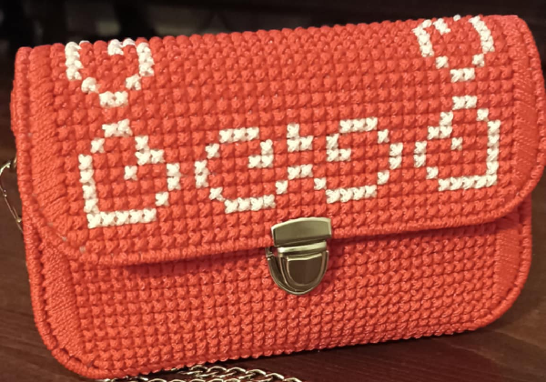

Ako vzniklo
VK Studio
VK Studio vzniklo v roku 2025 z jednoduchej potreby — chceli sme kabelku, ktorá je iná. Nie sériová, nie anonymná, ale taká, za ktorou cítiť niekoho konkrétneho. Začali sme s jednou cievkou macrame priadze, niekoľkými ihlami a bezpočtom nezdárených pokusov, kým sme prišli na vzor, ktorý nás skutočne nadchnol.
Prvá kabelka skončila v rukách kamarátky ako darček. Reakcia bola taká nadšená, že sa čoskoro objavili ďalšie objednávky — z okruhu priateliek, potom od cudzích ľudí cez Instagram. Tak sa z koníčka stalo remeslo a z dielne sa stalo malé štúdio s jasným zámerom: robiť veci dobre, pomaly a ručne.
Dnes každú kabelku navrhujeme individuálne, vyberáme materiály s ohľadom na ich trvanlivosť a dbáme na to, aby každý kus vydržal roky každodenného nosenia. Veríme, že pekné veci nemusia byť iba na výstavu — musia fungovať aj v reálnom živote.

Čo nás
definuje
Pre nás je každá kabelka malým dielom. Nepoužívame skratky ani lacné materiály — volíme kvalitné macrame priadze, pevné výstuže a spoľahlivé zátvory. Výsledok musí vydržať každodennú záťaž, nie iba fotenie pre Instagram.
Radi experimentujeme s farbami a vzormi, ale vždy v medziach toho, čo sa dá robiť dobre ručne. Nestíhame trendy — namiesto toho sa sústredíme na timelessové tvary a výšivky, ktoré nezostarnú ani o desať rokov.
Záleží nám aj na udržateľnosti — nakupujeme od lokálnych dodávateľov, minimalizujeme odpad a kabelky balíme do recyklovateľného papiera. Malé kroky, ale s vedomým zámerom.

Čo sa ľudia
pýtajú najčastejšie
Páči sa ti,
čo robíme?
Napíš nám — radi odpovieme na akúkoľvek otázku alebo začneme pracovať na kabelke priamo pre teba.
Prejsť na kontakt